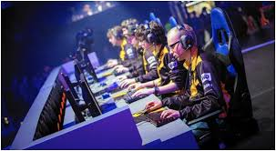
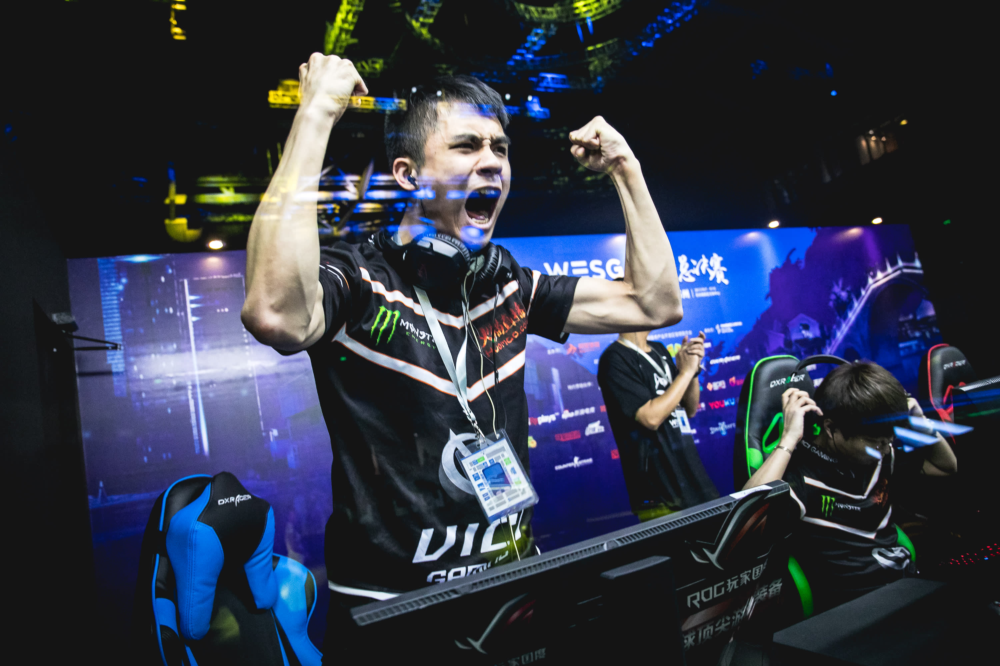
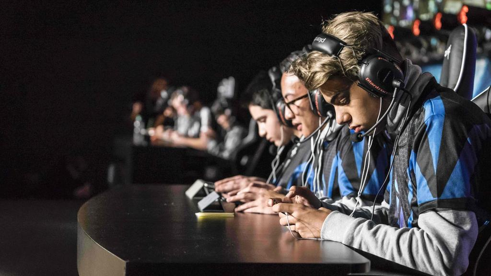

|
|
home | top games to compete | catogory | merch shop| events| contact|your bookings | PS4 events | x box events |

Esports are video games played in professional competitions. These games are played online so they require a good internet connection. The Esport industry is productive and it is expected to grow more with the growing usage of the internet. Esports are classified into different genres. The genres include First-person shooter, fighting games, Real-time strategy, racing, sport games, and multiplayer online battle arena among many others. Counter Strike: Global Offensive (CS: GO) This game was launched in 2012 and since then it has been doing well because of its competitiveness in the esports circuit. It is part of a 1 million dollars prize pool competition known as the Eleague major. This game is the most popular esport grant watched and played by people especially in United Kingdom.  League of Legends This is a game developed by the Riot games and it was published in 2009. This multiplayer online battle arena game has been featured in tournaments like LoL tournament and Electronic Sports league season. It is free to play and it has prize pools of over 6 million US dollars.  Overwatch This game has multiple game modes, cool characters, and colorful levels. It is a first-person shooter game that many have attested that it is enjoyable. This game is successful because of several esports initiatives that it is involved in like the Overwatch world cup. You can check related to sports game here https://www.esports.net/  The multiplayer online battle arena (MOBA) is popular compared to the other genres because it has a high number of participants and viewers. The earliest games to be in tournaments were the fighting games. The real-time strategy games are competed on personal computers on the internet. The Real-time strategy games are popular since you do not have to move from your area to participate. Each of these genres has different games from which you can choose. Over the years, there are games that have been top rated multiple times and have remained at the top of the list constantly. Here is the list of games that have been top rated this year: |